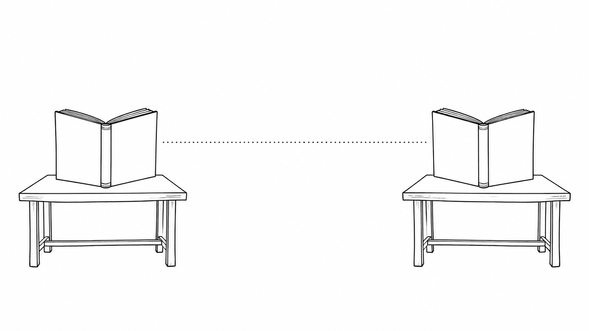
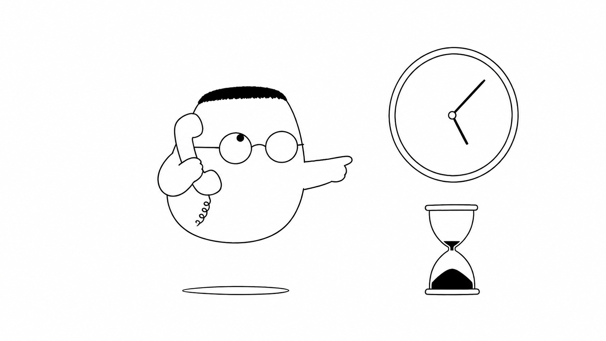

Masalah sehari-hari
Dua cabang restoran sering perlu bertukar informasi. Cabang A bisa bertanya tentang stok, harga, atau status pesanan di cabang B. Jika pertanyaan itu dikirim sebagai surat berkali-kali, waktu habis untuk menulis, mengirim, dan membaca ulang.
Analogi Kuka
Kuka mengangkat telepon meja di cabang A. Ia berbicara langsung dengan dapur cabang B, bukan menitipkan surat kepada kurir. Permintaannya mengikuti buku kode yang sudah disepakati kedua cabang.
Di buku itu ada nama pesanan, bentuk isinya, dan jawaban yang boleh dikirim. Karena kedua dapur memakai buku yang sama, mereka tidak perlu menebak arti setiap pesan.
Peta istilah telepon
Telepon langsung adalah gRPC. Buku kode adalah protobuf. Dapur yang menerima panggilan adalah server. Dapur yang menelepon adalah client. Saluran telepon adalah channel. Cara memanggil pesanan adalah stub. Percakapan yang punya satu tanya dan satu jawab disebut unary.
Ilustrasi
gRPC cocok saat banyak layanan internal perlu bertanya dan menjawab dengan cepat. Hubungan ini tetap membutuhkan aturan. Telepon yang cepat tidak membantu jika satu cabang memakai arti kata yang berbeda.
Penjelasan konsep
gRPC adalah cara bagi satu service untuk memanggil operasi milik service lain melalui jaringan. Bagi pemanggil, rasanya seperti memanggil fungsi biasa. Di balik layar, pesan pergi ke server lain, diproses, lalu hasilnya kembali.
gRPC ada karena komunikasi antar layanan bisa sangat sering. Format pesan yang ringkas dan saluran yang dapat dipakai berulang membantu mengurangi pekerjaan bolak-balik. Ini berguna di dalam sistem yang memiliki banyak service dan banyak panggilan kecil.
Model mentalnya sederhana. Client punya tujuan dan permintaan. Server menerima panggilan, menjalankan pekerjaan, lalu mengirim jawaban atau status gagal. Kedua sisi tetap terpisah, tetapi cara bicara mereka dibuat jelas.
protobuf adalah format pesan sekaligus kontrak. Kontrak ini mendeskripsikan nama service, nama operasi, data permintaan, dan data jawaban. Kedua cabang membaca definisi yang sama, sehingga bentuk pesan tidak berubah secara diam-diam.

Dalam panggilan unary, client mengirim satu permintaan dan server mengirim satu jawaban. Polanya cocok untuk pertanyaan stok sederhana. Kedua sisi tahu kapan percakapan dimulai dan kapan selesai.
Cara protobuf meng-encode
Isi pesan diubah menjadi bentuk biner yang padat sebelum dikirim. Bentuk ini lebih hemat daripada teks panjang untuk banyak jenis data. Client dan server dapat membacanya karena keduanya mengikuti kontrak protobuf yang sama.
HTTP/2 di bawahnya
gRPC umumnya memakai HTTP/2 sebagai jalur transport. Satu koneksi dapat membawa beberapa panggilan tanpa membuka jalur baru untuk setiap pesan. Ibaratnya satu kabel telepon bisa membawa banyak percakapan yang diatur rapi.
Streaming server dan client
streaming mengirim pesan secara bertahap. Pada server streaming, client mengirim satu permintaan lalu server mengirim daftar jawaban sedikit demi sedikit. Pada client streaming, client mengirim banyak pesan lalu server memberi satu hasil setelah semuanya diterima.
Channel dan stub
Channel adalah sambungan menuju server. Stub adalah pemanggil yang sudah dibentuk dari kontrak service. Client memakai stub melalui channel, jadi kode aplikasi tidak perlu mengatur setiap detail pengiriman sendiri.
Metadata, deadline, dan pembatalan
Metadata adalah informasi tambahan yang ikut bersama panggilan, seperti identitas atau token. Deadline menetapkan batas waktu. Jika waktu habis, panggilan dibatalkan agar client tidak menunggu selamanya.

Status code dan error
Server tidak hanya mengirim jawaban. Ia juga mengirim status code standar, misalnya tidak ditemukan, tidak diizinkan, atau gagal sementara. Client membaca status itu dan memilih apakah perlu memberi pesan, mencoba lagi, atau berhenti.
Interceptor
Interceptor adalah pemeriksa yang dilewati panggilan sebelum atau sesudah handler berjalan. Ia dapat mencatat waktu, menambahkan metadata, atau memeriksa aturan bersama. Fungsinya mirip middleware di jalur telepon.
Autentikasi dan keamanan
Tidak semua cabang boleh menelepon. Autentikasi memeriksa identitas client, lalu aturan akses menentukan operasi yang boleh dipakai. Sambungan juga perlu dilindungi agar pesan tidak mudah dibaca atau diubah di tengah jalan.
gRPC dibanding REST
REST sering memakai HTTP dan format JSON yang mudah dibaca banyak jenis client, termasuk browser. gRPC menawarkan kontrak ketat, pesan biner yang ringkas, dan pola streaming untuk komunikasi internal. Pilihan bergantung pada siapa pemanggilnya dan kebutuhan sistem.
Diagram alur
Cabang A memulai panggilan dan memeriksa buku kode. Pesan padat melewati satu jalur menuju cabang B. Cabang B memakai kode yang sama, lalu mengirim jawaban kembali melalui jalur itu.
Contoh mini
Tanya, Kuka: Berapa stok gula di cabang B? Jawab, cabang B: 50 kg. Kuka: Diterima, terima kasih.
Kartu pos ini pendek karena kedua cabang sudah tahu bentuk pertanyaannya. Dalam gRPC, kontrak protobuf membantu pesan seperti ini dibaca dengan cara yang sama oleh kedua service.
Ringkasan
- gRPC membuat satu service dapat memanggil operasi di service lain melalui jaringan.
- Komunikasi langsung membantu layanan internal bertukar banyak pesan dengan cepat.
- protobuf menjadi kontrak tentang bentuk permintaan, jawaban, dan operasi yang tersedia.
- Unary berarti satu permintaan dan satu jawaban.
- Streaming mengirim banyak pesan secara bertahap dari server atau client.
- Channel dan stub membantu client memakai sambungan serta operasi yang sudah disiapkan.
- Metadata, deadline, status code, interceptor, dan autentikasi membuat panggilan lebih terkendali.
- REST tetap berguna untuk banyak client, sedangkan gRPC sering cocok untuk komunikasi internal antar service.
Pertanyaan pemahaman
- Apa beda mengangkat telepon (gRPC) dan mengirim surat (REST)?
- Apa isi buku kode (protobuf) dan kenapa kedua cabang harus memegang yang sama?
- Apa gunanya batas waktu (deadline) yang dibawa nota?
Mau lebih dalam
Versi teknis membahas kontrak service, panggilan antar proses, dan cara menjalankan komunikasi gRPC dengan contoh kode.
Disinggung sekilas
- Streaming dua arah
- Alur .proto ke kode
- Ketahanan dan load balancing
- gRPC-Web untuk browser
- Observabilitas dan debugging
Belum dibahas di sini
Crib-sheet debug dan setup lengkap ada di versi teknis.